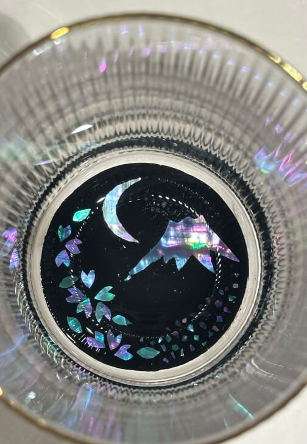
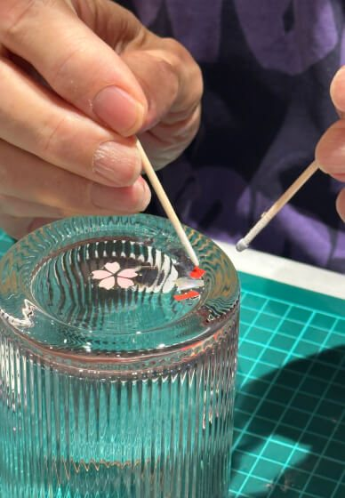
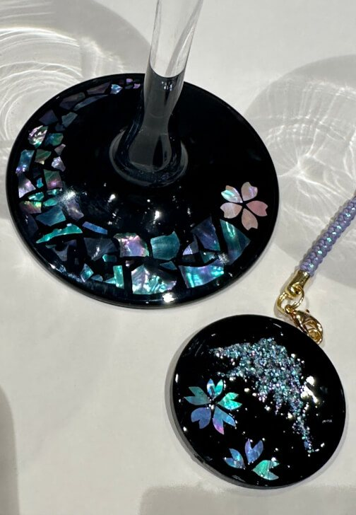
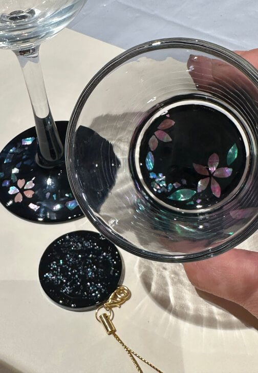
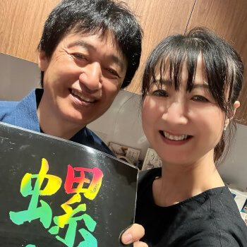
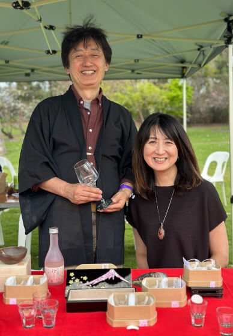
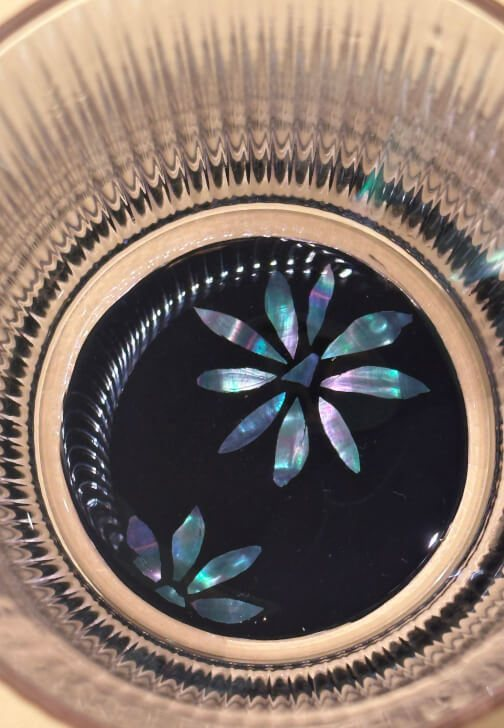

Modern Raden Workshop · Sydney CBD
Cut real shell by hand.
Take three pieces home the same day.
A two-hour Japanese craft workshop with Akki & Hisae. Thin sheets of mother-of-pearl, a black ground, and the rainbow light that lies quietly beneath the surface.
- Length
- 2hours
- Group
- 1–4guests
- Price
- $130per guest
- Reviews
- 5.0from 40

What is raden
Beauty that waits beneath the surface
Raden is a traditional Japanese decorative art that uses thin pieces of real mother-of-pearl, such as abalone or turban shell, to create shimmering patterns. The natural layers of shell reflect light, revealing soft rainbow colours.
Raden developed in Japan through the combination of influences from Asia and traditional lacquer techniques. More than decoration, raden reminds us that beauty often lies quietly beneath the surface, waiting to be revealed.
Alongside the hands-on making, you’ll discover the history, meaning and stories behind raden.

What you make
Three original pieces,
finished on the day


What makes our workshop special
- i
Authentic raden shell sheets
- Genuine shell sheets sourced from Japan
- UV resin and black acrylic paint are used instead of lacquer
- ii
Hands-on traditional techniques
- Experience traditional raden techniques
- Cut shell pieces by hand
- Learn the process, not just the result
- iii
Take your work home the same day
- All pieces are finished on the day
- Ready to take home and use
- No waiting, no shipping
Two hours, step by step
From a story to a finished piece
What to bring Reading glasses if you need them, as some fine detailed work is involved.
Raden’s beautiful philosophy
Raden – Colours your Life
Raden is beautiful on its own,
but when it meets deep black lacquer, its glow becomes even stronger.
This is very similar to us.
We all have hidden talents and quiet beauty inside us,
and sometimes, it’s a meeting—with a person, an experience, or a moment—that helps those colours shine.
Raden reminds us that beauty grows through connection.
I hope today’s experience brings out new colours within you.
Choose a date
Classes run regularly, mostly at 6 pm, with daytime sessions on some Fridays and Saturdays. Tap a marked day.
- $130 per guest · 1 to 4 guests · 2 hours
- No cancellations, but you are free to reschedule up until 2 days before the class.
- Bookings and payment are handled securely through ClassBento.
5.0
40 verified reviews,
all five stars
From guests on ClassBento, in their own words.


Your teachers
Akki & Hisae
Akki & Hisae are Japan-born artists based in Sydney.
As accredited instructors of Kintsugi Australia, they teach the art of kintsugi, and have developed this raden workshop as a creative spin-off of their practice.
Drawing on their individual skills and personalities, they create workshops that are warm, welcoming and enjoyable, a relaxed space to experience Japanese craftsmanship through hands-on making and cultural storytelling.
Visit the studio
Suite 107 / 147 King Street
Sydney NSW
- St James
- Martin Place
- Wynyard
- Town Hall
All four stations are within walking distance.
Ask us
Ask about a private class or a custom date, give a class as a gift, or send us a question. To book a class, choose a date above.
